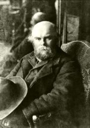
Paul Verlaine
|
PROKLETÍ BÁSNÍCI
Označení prokletí básníci prosazoval jejich mluvčí Paul Verlaine. Velmi dobře jím vyjádřil osud, tvorbu i společenské postavení nové generace moderních umělců, která začala publikovat v 70. letech 19. století. Rimbaud, Mallarmé a další spisovatelé opovrhovali společenskými normami, nerespektovali maloměšťáckou morálku a žili bohémským životem. Také jejich básně byly značně nekonvenční, a proto je odmítala nejen dobová kritika, ale zprvu i čtenáři. Prokletí básníci měli rovněž velké problémy s publikováním svých textů, protože oficiální literární časopisy tiskly výhradně tvorbu parnasistů.
Verlainovo úzké vymezení okruhu prokletých básníků bylo postupně rozšířeno o další francouzské autory jako Baudelaire nebo Lautréamont. Někteří odborníci řadí mezi prokleté básníky také amerického romantika Poea a další moderní umělce z různých částí světa. Tyto autory spojuje nepochopení dobovou společností a těžký osud. Neochota k životním i uměleckým kompromisům je vyvrhla na okraj společnosti, kde živořili na pokraji bídy. Průkopnictví prokletých básníků se ukázalo až po jejich smrti, kdy nová generace umělců trvale posunula estetická kritéria. Dnes naopak nikdo nezná ve své době velmi úspěšné autory Parnasu...
|
Výtvarné umění
Ve výtvarném umění byli souputníky prokletých básníků realisté Courbet, Manet nebo Whistler, kteří malovali portréty moderních spisovatelů. Prokleté básníky četli impresionisté, symbolisté i dekadenti. Kritik G.Coquiote razil ve 20. letech 20. stol. analogický termín prokletí malíři.
Kteří malíři měli podobný osud jako prokletí básníci?
|
Charles Baudelaire
(1821-1867)
Charles Baudelaire [šarl bodlér] žil bohémským životem a nezřízeně rozhazoval rodinné jmění. Proto se jeho příbuzní snažili, aby byl zbaven svéprávnosti. Dosáhli svého a soud mu vnutil právní dohled. Baudelaire musel zásadně omezit své výdaje a živořil na pokraji bídy. Drogy a syfilida ho nakonec zničily duševně i tělesně.
Napsal básnické sbírky Květy zla a Umělé ráje (Báseň o hašiši, Pojídač opia), eseje Úvahy o některých mých současnících nebo osobní vyznání Mé srdce, tak jak je. Posmrtně vyšly jeho Malé básně v próze. Překládal povídky E.A.Poea, jehož tvorbu obdivoval. K Baudelairově uměleckému odkazu se hlásili hlavně dekadenti.
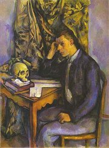
Cézanne: Mladík s lebkou
|
Charles Baudelaire: Květy zla
Básnická sbírka Květy zla vyšla poprvé roku 1857, Baudelaire ji ale stále rozšiřoval, až přesáhla počet 140 básní, většinou sonetů. Autor je rozdělil do oddílů Spleen a ideál, Pařížské obrazy, Víno, Květy zla, Vzpoura a Smrt. Baudelaire rezignoval na líčení ideálů. Dospěl k názoru, že dobro neexistuje, a rozhodl se hledat krásu v ošklivosti. Záměrně líčil různé formy zla symbolizované Satanem. Celou sbírku prostupuje otevřený erotismus, rouhání, zvrhlost, nicota a zvláštní pocit úzkosti, který autor nazývá spleenem [splín]. Jedinou pozitivní hodnotu spatřuje Baudelaire v umění. Definitivním východiskem ze všeobecného zmaru ale zůstává jedině smrt.
Po vydání Květů zla byl Baudelaire odsouzen za poškozování dobrých mravů a urážku náboženské morálky. Musel zaplatit pokutu a vyřadit ze své sbírky básně Léthé, Klenoty, Té, jež je příliš veselá, Lesbos, Prokleté ženy a Proměny upírovy.
Charles Baudelaire: Malé básně v próze
Malé básně v próze vyšly jako celek až po Baudelairově smrti. Zahrnují 50 krátkých textů, ve kterých se snažil ukázat, že lyrično není výhradně doménou poezie a že básně je možno skládat i v próze.
|
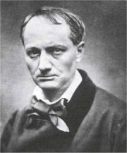
Co je synestézie?
Jak na tebe působí báseň Mršina? Pokus se ji vyložit.
Jak rozumíš výrazu spleen?
Proč byla cenzurována báseň Proměny upírovy?
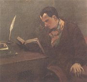
Courbet: Charles Baudelaire
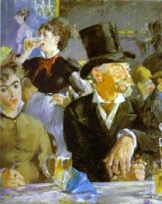
Manet: Pijáci
Která z básní v próze tě zaujala nejvíce? Proč?
Zkus napsat báseň v próze.
|
Paul Verlaine (1844-1896)
Paul Verlaine [pol verlen] pracoval jako úředník na pařížské radnici. Brzy po svatbě se seznámil s Rimbaudem, začal vést bohémský život a propadl alkoholu. Opustil manželku a vydal se se svým milencem do Anglie a Belgie. V záchvatu žárlivosti po Rimbaudovi vystřelil. Za pokus o vraždu skončil na dva roky ve vězení, kde se obrátil na katolickou víru. Později začal znovu neúměrně pít absint.
Verlaine je autorem řady básnických sbírek – Saturnské básně, Přítelkyně, Galantní slavnosti, Písně beze slov, Kdysi a nedávno nebo Moudrost. Sestavil také knihu medailonů svých básnických druhů Prokletí básníci.
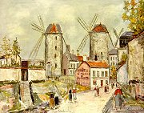
Utrillo: Moulin de la Galette
|
Verlainova poezie
Řada životních zvratů, kterými Verlaine prošel, se odrazila i v jeho básnické tvorbě. Debut Saturnské básně (1866) představuje autora jako uznávaného parnasistu. Verlaine byl dokonce zvolen Knížetem básníků. Po seznámení s Rimbaudem se jeho styl zásadně proměnil, jak ukazuje sbírka Písně beze slov. Obrat k náboženství ovlivnil básně další sbírky – Moudrost. Své představy o poezii vtělil do skladby Umění básnické. Verlaine zdůrazňoval především hudebnost veršů a zvukomalbu. Tuto koncepci dále rozvíjeli impresionisté.
Paul Verlaine: Prokletí básníci
Do antologie Prokletí básníci zařadil Verlaine ukázky z tvorby a stručné medailony svých přátel. Patřili k nim Tristan Corbière, Arthur Rimbaud, Stéphane Mallarmé, Marceline Desbordes-Valmorová [debord] a Villiers de l’Isle-Adam [vilje d lil adan]. Sám sebe popsal v portrétu Pauvre Lelian (Ubohý Lelian), což je přesmyčka jména Paul Verlaine.
|
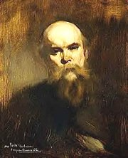
Eugéne Carriére: Verlaine
Co Verlaine doporučuje v básni Umění básnické?
Řídil se těmito požadavky ve vlastní tvorbě?
Co tě na jeho básních zaujalo?
Vytvoř anagramy, které dávají smysl, ze jmen prokletých básníků, dalších spisovatelů nebo svých spolužáků.
|
Jean-Arthur Rimbaud
(1854-1891)
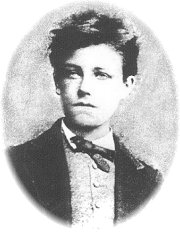
Jean-Arthur Rimbaud [žan artír rembo] vytvořil své dílo mezi 15. a 19. rokem života. Sympatizoval s komunardy a z rodného Charleville utekl do Paříže, kde se seznámil s Verlainem. Společně odjeli do Londýna. Když po něm milenec vystřelil, opustil ho a potloukal se sám po Evropě. Nakonec se usadil v Egyptě. Přestal psát a věnoval se obchodu se zbraněmi, kávou a zlatem. Zemřel na rakovinu (amputace nohy ho nezachránila).
Rimbaud je autorem sbírek básní v próze Sezona v pekle a Iluminace, básně Opilý koráb a mnoha dalších veršů. Z jeho korespondence se zachovaly tzv. dopisy vidoucího. O publikování vlastních děl se příliš nestaral, ale této práce se ochotně ujal Paul Verlaine.
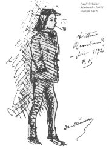
Verlainova kresba Rimbauda
|
Rimbaudovy básně
Rimbaud patřil k nejoriginálnějším básníkům vůbec. Většinu svých průkopnických děl přitom napsal v chlapeckém věku. Báseň Opilý koráb vznikla, aniž na vlastní oči spatřil moře. Také další skladby jsou výtryskem jeho nespoutané fantazie. Rimbaudova poezie je rouhačská a vzpurná, překypuje nádhernými básnickými obrazy a překvapuje originálním viděním.
Rimbaudovy prózy
Rimbaudovy prózy si v ničem nezadají s jeho básněmi. Vyšly ve dvou knihách pojmenovaných Iluminace a Sezona v pekle. Jde vlastně o básně v próze, tedy krátké lyrické texty. Originálním vyznáním je diptych Třeštění (Šílená panna, Alchymie slova).
Jean-Arthur Rimbaud: Dopisy vidoucího
Do Rimbaudova způsobu uvažování nám dává nahlédnout jeho korespondence. Bohužel se dochovalo pouze několik dopisů. Klíčové jsou tzv. dopisy vidoucího. V těchto dvou listech Rimbaud popisuje své názory na uměleckou tvorbu a roli spisovatele.
|
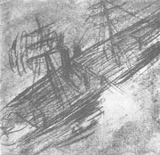
Rimbaudova kresba k Opilému korábu
Na jakém principu je vystavěna báseň Samohlásky?
O čem je Spáč v úvalu?
Jak na tebe působí sloky Opilého korábu?
Která báseň má formu sonetu? V čem se Rimbaudovy sonety liší od Petrarkových?
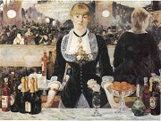
Manet: Bar ve Folies-Bergére
Srovnej Rimbaudovy básně v próze s Baudelairovými.
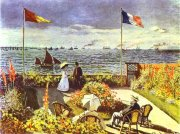
Monet: Terasa v Saint-Adresse
Jak rozumíš Rimbaudově výroku „já je někdo jiný“?
Co měl Rimbaud na mysli, když psal o „rozrušování smyslů“?
Souhlasíš s Rimbaudovými názory? Proč?
|
Stéphane Mallarmé
(1842-1898)
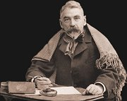
Stéphane Mallarmé [stefan malarme] se živil jako učitel angličtiny a novinář. Jednou týdně pořádal ve svém domě setkání spřízněných duší, tzv. úterky navštěvovali jeho obdivovatelé Claudel, Valéry, Jarry nebo Gide. Vydal sbírky Verš a próza nebo Album veršů v próze. Proslulá je jeho ekloga Faunovo odpoledne nebo dramatická báseň Herodias. Po Verlainovi byl zvolen Knížetem básníků. Bývá označován za duchovního otce symbolismu. Jeho novátorská skladba Vrh kostek nikdy nezruší náhodu, která využívá grafického členění textu, je považována za předzvěst experimentální poezie.
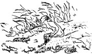
Manetova ilustrace k Faunovu odpoledni
|
Stéphane Mallarmé: Faunovo odpoledne
Eklogu Faunovo odpoledne psal Mallarmé neuvěřitelných 10 let, aby ji dovedl k co možná nejvyšší dokonalosti. Vyšla roku 1876 v počtu 195 výtisků jako bibliofilie s Manetovými ilustracemi. Jde o monolog Fauna, kterého sužuje nejistota, zda jsou nymfy pouze výplodem jeho erotických snů, anebo byly jeho zážitky s nimi skutečné... Mallarmé nechtěl věci pojmenovávat přímo, ale pouze je naznačoval, aby nechal čtenáři prostor pro zapojení vlastní fantazie.
„Básníka lze pochopit jenom tehdy, jsme-li sami básníky nebo když se dovedeme jimi na chvíli stát... Budu nesrozumitelný tomu, kdo si mé dílo plete s novinami. Báseň je tajemství, k němuž klíč má čtenář ve své obraznosti...“ (Mallarmé)
„Proniknout za skutečnost, vyvolat obraz, který se rodí ze snů, to je poslání básníkovo. Pojmenovat věc přímo znamená nepochopit, v čem ze tří čtvrtin záleží působivost básně – totiž právě ve šťastné schopnosti tušit v hlubinách. V naznačení a přiblížení spočívá sen. To je podstata tajemství, které tvoří symbol.“ (Mallarmé)
|
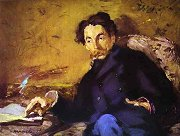
Manet: Stéphane Mallarmé
Kdo je Faun? Co víš o nymfách?
Jak se ti líbí báseň Faunovo odpoledne?
Poslechni si Debussyho Preludium k Faunovu odpoledni a nakresli ilustraci ke stejnojmenné básni.
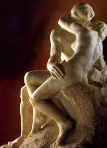
Rodin: Polibek
Co nového ses dozvěděl/a o Mallarméovi z Verlainova textu?
Která z citovaných básní se ti líbila nejvíce? Proč?
|
Comte de Lautréamont
(1846-1870)
Isidore Ducasse [isidor dikas] psal pod pseudonymem Comte de Lautréamont [lotreamon]. O jeho životě nevíme prakticky nic. Stihl vydat pouze dvě krátké knihy Zpěvy Maldororovy a Poezie. Dochovalo se rovněž několik dopisů. Jeho tvorba byla dlouhá desetiletí nedoceněna. Až počátkem 20. století se k Lautréamontovi začali hlásit francouzští surrealisté.
„Opěvoval jsem zlo, jak to dělali i Mickiewicz, Byron, Milton, Southey, A. de Musset, Baudelaire atd. Samozřejmě jsem trochu přehnal svůj rejstřík, abych udělal něco nového ve smyslu oné vznešené literatury, která opěvuje zoufalství jen proto, aby čtenáře deprimovala, a aby ho donutila přát si dobro jako lék.“ (Isidore Ducasse)
|
Comte de Lautréamont: Zpěvy Maldororovy
Démonická skladba Zpěvy Maldororovy vyšla roku 1869. Tvoří ji 6 zpěvů, ve kterých střídavě promlouvá Maldoror, fiktivní autor, anonymní zapisovatel Maldororových monologů i autor-čtenář. Ne vždy lze ovšem tyto subjekty jednoznačně odlišit. Velmi často je oslovován přímo čtenář. V díle převládají destruktivní prvky a negativní motivy. Sadismus, znásilnění a vraždy vrcholí v Maldororově souboji s Bohem, který je vylíčen jako nemohoucí opilec a snůška nejhorších nectností... Text vyniká nespoutanou obrazností a naprostou iracionalitou. Popírání morálních pravidel šlo tak daleko, že ještě český překlad z roku 1929 byl cenzurován, protože se v něm „smilnými činy mravopočestnost a stydlivost uráží hrubě a takovým způsobem, že se tím zavdala příčina k veřejnému pohoršení“.
Další díla a autoři
Tristan Corbière: Žluté lásky
Marceline Desbordes-Valmorová: Knížka něžností
Villiers de l’Isle-Adam: Kruté povídky, Axel
Edgar Allan Poe: Havran, povídky
|
Co si myslíš o Lautréamontově výroku „Poesii mají dělat všichni. Nikoli jedinec.“?
Měli by umělci zobrazovat zlo, jak to dělal Lautréamont, nebo ošklivost, jako Baudelaire? Proč?
Co je krásné na „náhodném setkání šicího stroje a deštníku na pitevním stole“?

Ilustrace Salvadora Daliho ke Zpěvům Maldororovým
|
Internetové stránky
Baudelaire
Baudelaire
Baudelaire
Baudelaire
Rimbaud
Rimbaud
Rimbaud: Opilý koráb, přel. Hrubín
Verlaine: Píseň podzimní
Verlaine
Mallarmé
Maldoror
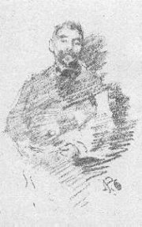
Whistler: Stéphane Mallarmé
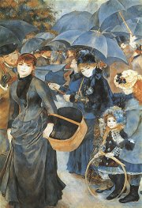
Renoir: Deštníky
|
Doporučená četba
Baudelaire, Charles: Čas je hráč, Československý spisovatel, Praha 1986
Baudelaire, Ch.: Hořké propasti, Československý spisovatel
Baudelaire, Ch.: Květy zla, přel. S.Kadlec, SNKLHU, Praha 1957
Baudelaire, Ch.: Malé básně v próze, přel. J.Fořt, BB art, Praha 2002
Baudelaire, Ch.: Mé srdce, tak jak je, přel. J.Vladislav, Torst, Praha 1996
Baudelaire, Ch.: Úvahy o některých současnících, Odeon, Praha 1968
Baudelaire, Ch.: Víno samotářovo, Československý spisovatel, Praha 1979
Corbière, Tristan: Žluté lásky, Odeon, Praha 1975
Desbordes-Valmorová, Marceline: Žár lásky, lásky žal, přel. A.Janoušková, Praha 1989
Lautréamont, Comte de: Souborné dílo (Zpěvy Maldororovy, Poesie, Dopisy), přel. Voskovec, Turek, Kra, Praha 1993
Levý, Otakar: Baudelairova estetika a technika, Eikon, Praha 1998
Lévy, Bernard-Henri: Poslední dny Charlese Baudelaira, přel. M.Novotný, Jota, Brno 1997
Mallarmé, Stéphane: Faunovo odpoledne a jiné básně, Svoboda, Praha 1996
Mallarmé, S.: Souhlas noci, Odeon, Praha 1977
Matarasso, H., Petitfils, P.: Život Rimbaudův, přel. L.Čivrný, Odeon, Praha 1968
Nezval, Vítězslav: Překlady I, Československý spisovatel, Praha 1982 (Poe, Rimbaud, Mallarmé, Baudelaire)
Novák, O.: Baudelaire a jeho květy zla, Brno 1958
Petitfils, Pierre: Verlaine, přel. A.Pohorský, Československý spisovatel, Praha 1987
Podzimní píseň Paula Verlaina v českých překladech, Volvox globator, Praha 1993
Pohorský, Aleš: Prokletí a básníci, Garamond, Praha 2000
Porché, François: Bolestný život Baudelairův, přel. S.Kadlec, Jota, Brno 1997
Rimbaud, Arthur: Já je někdo jiný, přel. V.Nezval, Československý spisovatel, Praha 1962
Rimbaud, Arthur: Má bohéma, přel. V.Nezval, Československý spisovatel, Praha 1977
Štyrský, Jindřich: Život J.A.Rimbauda, Kra, Praha 1994
Troyat, Henri: Baudelaire, přel. P.Himmel, Mladá fronta, Praha 1997
Verlaine, Paul: Jeden z absolutních, Praha 1994
Verlaine, P.: Moudrost, přel. P.Kopta, Aurora, Praha 1995
Verlaine, P.: Prokletí básníci, přel. A.Kroupa, Československý spisovatel, Praha 1966
Verlaine, P.: Slova na strunách, přel. J.Vladislav, Československý spisovatel, Praha 1968
Verlaine, P.: Vdovcovy paměti, Má vězení, Zpověď, přel. G.Kavanová, Garamond, Praha 2003
Verlaine, P.: Záhadná luna, Československý spisovatel, Praha 1978
Villiers de l’Isle-Adam: Noc pod gilotinou, Praha 1969
|
Vypracuj písemný referát o některé z uvedených knih.
Srovnej různé české překlady textů prokletých básníků. V čem se liší? Jak se pozná dobrý překlad od špatného?
Pokus se o vlastní překlad nějaké básně přímo z originálu.
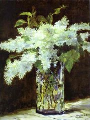
Manet: Lilie ve skleněné váze
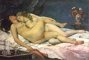
Courbet: Spánek
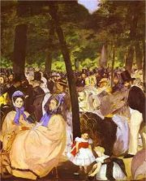
Manet: Koncert v Tuileriích
|
|